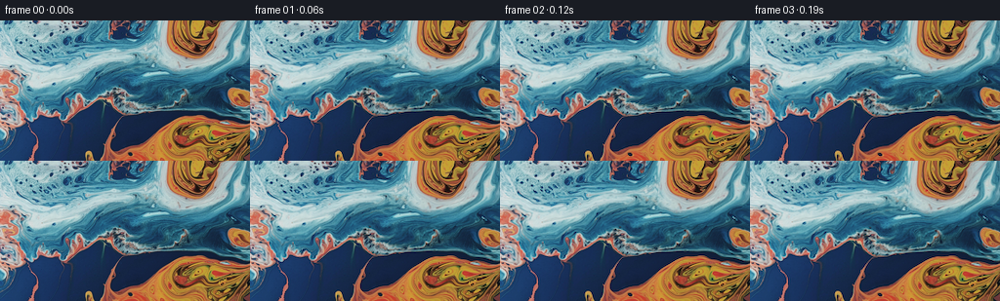
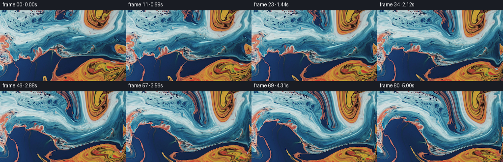

CODING AGENTS AS PIXEL WORLD MODELS
traex/DeepSeek-V4.1-Flash · 0000_s4
点击播放 · 原生 RGB 像素
逐轮保存的候选
回放视频、检查图与代码变化。
每份候选均可单独播放。实际图片检查记录在下方工具轨迹中。
候选 01播放与检查图
点击播放 · 原生 RGB 像素


展开代码变化
--- 上一保存版本
+++ 本次保存版本
@@ -0,0 +1,118 @@
+from pathlib import Path
+
+import numpy as np
+from PIL import Image
+from scipy.ndimage import map_coordinates
+
+import artifact_io
+
+
+CASE_DIR = Path(__file__).resolve().parent
+WIDTH = 256
+HEIGHT = 144
+FRAME_COUNT = 81
+FPS = 16.0
+
+
+def smoothstep(edge0, edge1, x):
+ t = np.clip((x - edge0) / (edge1 - edge0), 0.0, 1.0)
+ return t * t * (3.0 - 2.0 * t)
+
+
+def vortex_velocity(x, y, time):
+ """Divergence-free flow from a slowly evolving set of broad vortices."""
+ u = np.zeros_like(x, dtype=np.float64)
+ v = np.zeros_like(y, dtype=np.float64)
+
+ # The slow drift prevents the result from feeling like isolated stationary pins.
+ drift = 2.4 + 0.7 * np.sin(0.33 * time)
+ u += drift
+ v += 0.8 + 0.55 * np.sin(0.24 * time + 0.8)
+
+ vortices = [
+ # cx, cy, sigma, strength, orbit radius, rate, phase
+ (82.0, 76.0, 55.0, 840.0, 7.0, 0.31, 0.2),
+ (194.0, 45.0, 42.0, -610.0, 5.0, 0.27, 1.8),
+ (211.0, 116.0, 36.0, 520.0, 4.0, 0.35, 3.4),
+ (33.0, 115.0, 34.0, -430.0, 3.5, 0.29, 4.9),
+ (137.0, 20.0, 29.0, 300.0, 3.0, 0.38, 2.6),
+ ]
+ for cx, cy, sigma, strength, orbit, rate, phase in vortices:
+ cx_now = cx + orbit * np.sin(rate * time + phase)
+ cy_now = cy + 0.6 * orbit * np.cos(0.83 * rate * time + phase)
+ dx = x - cx_now
+ dy = y - cy_now
+ envelope = np.exp(-(dx * dx + dy * dy) / (2.0 * sigma * sigma))
+ pulse = 0.84 + 0.16 * np.sin(0.47 * time + phase)
+ scale = strength * pulse / (sigma * sigma)
+ u += -scale * dy * envelope
+ v += scale * dx * envelope
+
+ # Large-scale curl waves create marbling-like bands between the eddies.
+ wave_a = np.sin(2.0 * np.pi * y / 144.0 + 0.55 * time + 0.5)
+ wave_b = np.sin(2.0 * np.pi * x / 256.0 - 0.38 * time + 1.4)
+ wave_c = np.sin(
+ 2.0 * np.pi * (0.62 * x / 256.0 + 1.15 * y / 144.0)
+ + 0.43 * time
+ + 2.1
+ )
+ u += 1.7 * wave_a + 1.15 * wave_c
+ v += 1.1 * wave_b - 0.9 * wave_c
+
+ # Anchor the visible frame's edges while allowing a gentle current inside.
+ edge = (
+ smoothstep(0.0, 15.0, x)
+ * smoothstep(0.0, 15.0, WIDTH - 1.0 - x)
+ * smoothstep(0.0, 12.0, y)
+ * smoothstep(0.0, 12.0, HEIGHT - 1.0 - y)
+ )
+ return u * edge, v * edge
+
+
+def backward_coordinates(time):
+ """Trace every output pixel back to its source location at t=0."""
+ yy, xx = np.mgrid[0:HEIGHT, 0:WIDTH].astype(np.float64)
+ px = xx.copy()
+ py = yy.copy()
+
+ # More substeps at the end keep the local rotation smooth.
+ steps = 18 + int(round(time * 2.4))
+ dt = time / steps
+ for step in range(steps):
+ tau = time - step * dt
+ u, v = vortex_velocity(px, py, tau)
+ px -= u * dt
+ py -= v * dt
+ return px, py
+
+
+def render():
+ source = np.asarray(Image.open(CASE_DIR / "first_frame.png").convert("RGB"))
+ assert source.shape == (HEIGHT, WIDTH, 3)
+ frames = np.empty((FRAME_COUNT, HEIGHT, WIDTH, 3), dtype=np.uint8)
+ frames[0] = source
+
+ # Work in lightly linearized light so interpolation does not darken seams.
+ source_linear = (source.astype(np.float64) / 255.0) ** 2.2
+ for index in range(1, FRAME_COUNT):
+ time = index / FPS
+ px, py = backward_coordinates(time)
+ channels = [
+ map_coordinates(
+ source_linear[:, :, channel],
+ (py, px),
+ order=3,
+ mode="reflect",
+ prefilter=True,
+ )
+ for channel in range(3)
+ ]
+ linear = np.stack(channels, axis=-1)
+ rgb = np.clip(linear, 0.0, 1.0) ** (1.0 / 2.2)
+ frames[index] = np.rint(rgb * 255.0).astype(np.uint8)
+
+ return frames
+
+
+if __name__ == "__main__":
+ artifact_io.save(render(), CASE_DIR)
候选 02播放与检查图
点击播放 · 原生 RGB 像素

展开代码变化
代码未变化；重新保存了产物。
候选 03播放与检查图
点击播放 · 原生 RGB 像素

展开代码变化
--- 上一保存版本
+++ 本次保存版本
@@ -72,8 +72,13 @@
def backward_coordinates(time):
"""Trace every output pixel back to its source location at t=0."""
yy, xx = np.mgrid[0:HEIGHT, 0:WIDTH].astype(np.float64)
- px = xx.copy()
- py = yy.copy()
+ # A very slow outward expansion lets narrow bands reveal a little more
+ # material without looking like a camera move.
+ center_x = 0.5 * (WIDTH - 1)
+ center_y = 0.5 * (HEIGHT - 1)
+ zoom = 1.0 - 0.010 * (1.0 - np.exp(-time / 2.6))
+ px = center_x + (xx - center_x) * zoom
+ py = center_y + (yy - center_y) * zoom
# More substeps at the end keep the local rotation smooth.
steps = 18 + int(round(time * 2.4))
@@ -83,6 +88,16 @@
u, v = vortex_velocity(px, py, tau)
px -= u * dt
py -= v * dt
+
+ # Individual streamlines advance slightly differently, like unevenly
+ # heated paint, while the low amplitude keeps the source structure intact.
+ local_phase = (
+ np.sin(2.0 * np.pi * xx / 103.0 + 0.31 * time)
+ * np.sin(2.0 * np.pi * yy / 71.0 - 0.24 * time)
+ )
+ local_drift = 0.52 * np.sin(0.58 * time) * local_phase
+ px += local_drift
+ py -= 0.72 * local_drift
return px, py
候选 04播放与检查图
可观测工具轨迹
实际执行的命令与返回图片。
命令 1exit 0
/bin/bash -c "pwd && rg --files -g '"'!*'"\\.git*' | sed -n '1,200p'"
命令 2exit 0
/bin/bash -c "sed -n '1,240p' prompt.txt"
命令 3exit 0
/bin/bash -c "sed -n '1,300p' GENERATION_RULES.md"
命令 4exit 0
/bin/bash -c "file first_frame.png && identify first_frame.png 2>/dev/null || true && find . -maxdepth 2 -type f -printf '%p %s bytes\\n' | sort"
命令 5exit 0
/bin/bash -c "sed -n '1,260p' artifact_io.py"
命令 6exit 0
/bin/bash -c "cat task_spec.json && sed -n '1,240p' player_template.html"
命令 7exit 0
/bin/bash -c "python - <<'PY'
from PIL import Image
import numpy as np
im=Image.open('first_frame.png')
a=np.asarray(im)
print(im.mode, im.size, a.shape, a.dtype, a.min(), a.max(), a.mean(axis=(0,1)))
print('unique colors', len(np.unique(a.reshape(-1,a.shape[-1]), axis=0)))
try:
import cv2; print('cv2', cv2.__version__)
except Exception as e: print('no cv2',e)
try:
import scipy; print('scipy', scipy.__version__)
except Exception as e: print('no scipy',e)
PY"命令 8exit 0
/bin/bash -c 'time python generate.py'
命令 9exit 0
/bin/bash -c "python - <<'PY'
from pathlib import Path
import numpy as np
from PIL import Image
src=np.asarray(Image.open('first_frame.png').convert('RGB'))
frames=np.stack([np.asarray(Image.open(f'frames/{i:02d}.png')) for i in range(81)])
print('shape',frames.shape,'dtype',frames.dtype)
print('first exact',np.array_equal(frames[0],src),'maxdiff',np.abs(frames[0].astype(int)-src.astype(int)).max())
print('unique colors per frame min/max',min(len(np.unique(f)) for f in frames),max(len(np.unique(f)) for f in frames))
for i in [0,20,40,60,80]:
d=np.abs(frames[i].astype(float)-src.astype(float))
print(i, 'mean_abs',round(d.mean(),3),'p95',round(np.percentile(d,95),2),'max',d.max())
for i in [1,20,40,60,80]:
d=np.abs(frames[i].astype(float)-frames[i-1].astype(float))
print('motion',i,round(d.mean(),3),round(np.percentile(d,99),2))
PY
ffmpeg -version | head -n 1"命令 10exit 0
/bin/bash -c "python - <<'PY'
from PIL import Image
import numpy as np
im=np.asarray(Image.open('first_frame.png').convert('RGB'))
print('src uniques channel', [len(np.unique(im[...,c])) for c in range(3)])
a=(im.astype(np.float64)/255.)**2.2
print('linear uniques channel', [len(np.unique(a[...,c])) for c in range(3)])
b=np.rint((np.clip(a,0,1)**(1/2.2))*255).astype(np.uint8)
print('roundtrip exact',np.array_equal(b,im),'unique colors',len(np.unique(b.reshape(-1,3),axis=0)),'maxdiff',np.abs(b.astype(int)-im).max())
f=np.asarray(Image.open('frames/80.png'))
print('frame channel uniques',[len(np.unique(f[...,c])) for c in range(3)])
print('color spread', np.percentile(np.std(f.reshape(-1,3).astype(float),axis=0),[0,50,100]))
PY"命令 11exit 0
/bin/bash -c "python - <<'PY'
from pathlib import Path
import numpy as np
from PIL import Image
src=np.asarray(Image.open('first_frame.png').convert('RGB')).astype(float)
frames=np.stack([np.asarray(Image.open(f'frames/{i:02d}.png')).astype(float) for i in range(81)])
# global flow extent inferred by min-error integer shift on blurred image
from scipy.ndimage import gaussian_filter
s=gaussian_filter(src,(2,2,0))
for idx in [16,32,48,64,80]:
f=gaussian_filter(frames[idx],(2,2,0))
best=(1e9,0,0)
for dy in range(-12,13):
for dx in range(-16,17):
y0=max(0,dy); y1=min(144,144+dy); x0=max(0,dx); x1=min(256,256+dx)
e=np.mean((f[y0:y1,x0:x1]-s[y0-dy:y1-dy,x0-dx:x1-dx])**2)
if e<best[0]: best=(e,dx,dy)
print(idx,'shift',best[1:], 'mse',round(best[0],1))
# block displacement via local phase-ish exhaustive shift on 48 px patches
for idx in [40,80]:
print('frame',idx)
for cy,cx in [(30,50),(35,150),(35,225),(105,45),(110,150),(110,225)]:
f=frames[idx]; best=(1e9,0,0); r=24
tpl=f[cy-r:cy+r,cx-r:cx+r]
for dy in range(-16,17):
for dx in range(-20,21):
if cy-r+dy<0 or cy+r+dy>144 or cx-r+dx<0 or cx+r+dx>256: continue
e=np.mean((tpl-src[cy-r+dy:cy+r+dy,cx-r+dx:cx+r+dx])**2)
if e<best[0]: best=(e,dx,dy)
print((cx,cy),'source offset',best[1:], 'err',round(best[0],1))
PY"命令 12exit 0
/bin/bash -c "python - <<'PY'
from PIL import Image
import numpy as np
src=np.asarray(Image.open('first_frame.png').convert('RGB')).astype(float)
a=np.stack([np.asarray(Image.open(f'frames/{i:02d}.png')).astype(float) for i in [0,8,16,24,32,40,48,56,64,72,80]])
# differences between temporally spaced frames and color histogram stability
for i in range(1,len(a)):
d=np.abs(a[i]-a[i-1]); print(i*8, 'MAE',round(d.mean(),2), 'sat high',round((a[i].max(axis=-1)>220).mean(),3), 'dark',round((a[i].max(axis=-1)<45).mean(),3))
PY"命令 13exit 0
/bin/bash -c 'time python generate.py'
命令 14exit 0
/bin/bash -c "python - <<'PY'
from pathlib import Path
import numpy as np
from PIL import Image
src=np.asarray(Image.open('first_frame.png').convert('RGB'))
frames=np.stack([np.asarray(Image.open(f'frames/{i:02d}.png')) for i in range(81)])
assert frames.shape==(81,144,256,3) and frames.dtype==np.uint8
assert np.array_equal(frames[0],src)
# Smoothness in time: first differences should not spike.
d=np.abs(frames[1:].astype(np.int16)-frames[:-1].astype(np.int16)).mean(axis=(1,2,3))
print('temporal MAE: min/median/max',d.min(),np.median(d),d.max(),'last',d[-1])
print('temporal spike ratio',d.max()/np.median(d))
# Spatial edge energy relative to source.
edge=lambda a: np.abs(np.diff(a.astype(float),axis=1)).mean()+np.abs(np.diff(a.astype(float),axis=2)).mean()
print('edge source',edge(src),'frame 80',edge(frames[80]),'ratio',edge(frames[80])/edge(src))
print('frames saved',len(list(Path('frames').glob('*.png'))),'npz bytes',Path('pixels.npz').stat().st_size,'html bytes',Path('index.html').stat().st_size)
print('inspection unique colors',len(np.unique(frames[80].reshape(-1,3),axis=0)))
PY
python -m py_compile generate.py artifact_io.py"命令 15exit 0
/bin/bash -c "python - <<'PY'
from pathlib import Path
import numpy as np
p=np.load('pixels.npz')['pixels']
print('pixels.npz',p.shape,p.dtype)
required=['generate.py','pixels.npz','index.html','inspection.png','transition_check.png','frames/00.png','frames/80.png']
for name in required:
path=Path(name)
print(name, path.exists(), path.stat().st_size if path.exists() else '-')
PY"命令 16exit 0
/bin/bash -c 'git status --short 2>/dev/null || true'
视觉工具实际返回图片 1

视觉工具实际返回图片 2

视觉工具实际返回图片 3
视觉工具实际返回图片 4

视觉工具实际返回图片 5
保存候选 4 份；完成命令 16 次；可验证图片返回 5 张。原始 API 响应与完整日志保留在本地。